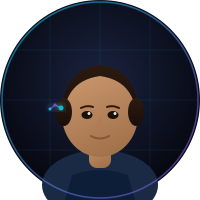

Built by practitioners,
not theorists.
Every member of the Fortirenova team has shipped systems under real production pressure. We obsess over the hard parts — latency, reliability, agent safety, and feedback loops that make systems improve rather than drift. Click any portrait to learn more.

Ada Marcellus Chief Executive OfficerAda Marcellus founded Fortirenova after a decade at the frontier of autonomous systems — first as a research scientist at DeepMind's multi-agent coordination team, then as Principal AI Architect at Palantir where she led the Foundry Intelligence layer deployed across three defense agencies. She left to answer a question she kept encountering: why are enterprises still treating AI as a feature when it could be the operating system? Fortirenova is her answer. Ada believes the most important property of an intelligent system is not raw capability but deployability — the ability to operate reliably at scale under constraints that weren't anticipated during design.
- Fortirenova — Founder & CEO (2023–present): Building the company from the ground up; leading client strategy, technical vision, and team growth.
- Palantir Technologies — Principal AI Architect (2019–2023): Designed and deployed the Foundry Intelligence layer. Led a distributed team of 22 engineers across 3 time zones.
- DeepMind — Research Scientist, Multi-Agent Systems (2015–2019): Published 8 peer-reviewed papers on cooperative agent behavior and emergent communication. Co-invented the Adaptive Policy Gradient framework (patent pending).
- MIT CSAIL — Research Assistant, Robotics & AI (2013–2015): Contributed to planning algorithms for autonomous logistics systems under Prof. Leslie Kaelbling.
- M.S. Computer Science — MIT (2015), concentration: Artificial Intelligence & Robotics
- B.S. Mathematics & Computer Science — University of Michigan (2013), summa cum laude
- Reinforcement Learning
- Multi-Agent Systems
- Large Language Models
- Distributed Architecture
- Python / JAX / PyTorch
- Technical Leadership
- Enterprise Strategy
- Evaluation Frameworks
The difference between a demo and a deployed agent is everything. Anyone can make something impressive; the hard part is making it reliable enough that you can trust it when you're not looking.